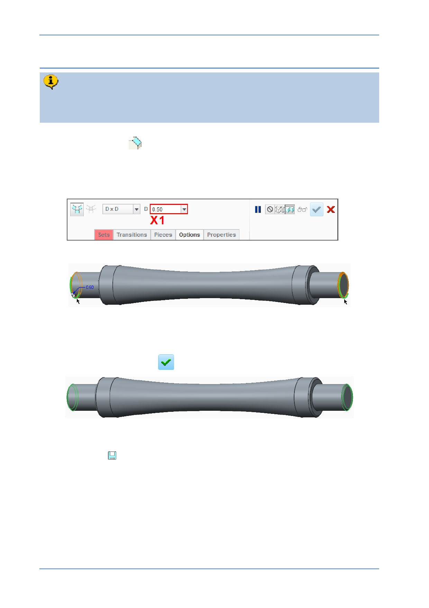

PTC Academic Program
Step 8: Chamfer the ends of the strut
Like rounds, chamfers are also “ Engineering ” features and are applied to edges
of the model. You will add 0.5 mm chamfer to the both ends of the strut. This will
make it easier to insert the strut ends into the holes of the cubes.
1. Start the Chamfer
tool from the Engineering group of the Model tab.
Notice the Chamfer dashboard and its specific options.
2. Defining the size of the chamfer:
In the dashboard, edit the size of the chamfer width to be 0.5 and press ENTER .
3. Selecting edges to chamfer:
Select one of the edges shown in green .
Press CTRL and select the other edge shown in green .
Click Complete feature
.
4. Saving your work:
If necessary, press CTRL + D to reorient the model to its default orientation.
Click Save
to save your work.
© 2012 PTC
Creo Parametric 2.0 Primer
Page 62